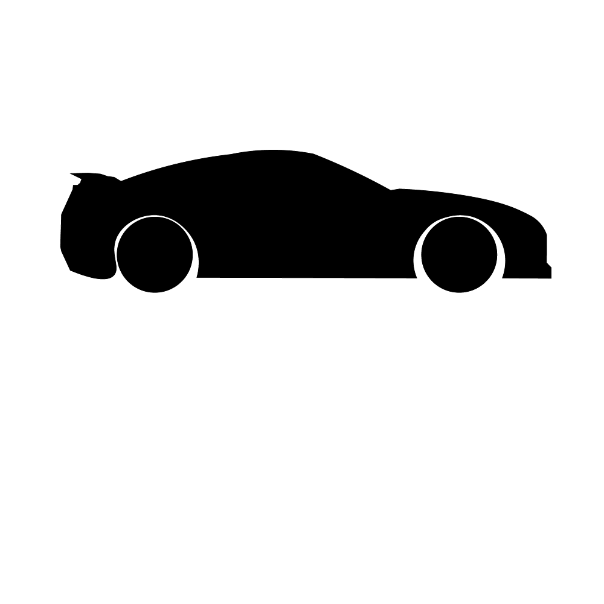

adamfejfar.com
⚙
pomodoro
short break
long break
25:00
start
pause
⟳
×
Pomodoro
minutes
Short Break
minutes
Long Break
minutes
Use Pomodoro sequence (4× short, then long)
Background image
Photo 1
Photo 2
Photo 3
Photo 4
Photo 5
Photo 6
Close
Save changes
Lofi Music
YouTube
⏮
▶
⏭
✈️
Airplane
🌧️
Rain
🚦
Street
🛍️
Mall
🔈